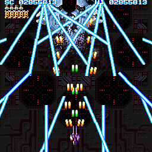
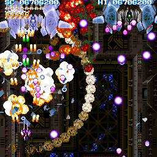

[戻る]
超連射68k


|
DOWNLOAD
超連射68k ver1.10 for X68000
sha256sum :
6d8169ef89654fd7986b65eecfb5444dc496ac8e2f888b385a6b531ea3ef2146
超連射68k ver1.10 for Windows
(build 2025/05/25 WIP18)
sha256sum :
26084e2adbe30d3c702cd22802185734b97378f856d78856827f73c23ce375fe
※実行ファイルが正常でも初回起動時に「発行元を確認できませんでした」というセキュリティ警告が出ることがありますが、アーカイブの sha256sum が一致していれば安全です。
STORY
やつらとの戦いは、あまりに突然に始まった。
その存在は「理論上の可能性」として予言されていたが、
まさか本当に接触することになろうとは、誰も予想しなかった。
世界中の電子ネットワークは一瞬で制御を奪われた。
俺たちに勝ち目はなかった。
……その時までは。
「勝てるっすよ。」
静まり返った地下シェルターで、彼はそう言った。
かつて "伝説のメガデモコーダー" と呼ばれた男である。
彼はオタクの早口でまくし立てた。
「ネットワークから遮断されていたマシンは生きている。」
「68000 マシン？いいね！ビッグエンディアンはむしろ好都合だ。」
「旧世代CPUを積んだ低遅延レガシー戦闘機で突入する。」
「やつらのテクノロジをハックして戦うのだ！」
彼はクロックサイクル表を頭に叩き込むとコードを書き殴りはじめた。
フルスクラッチで回路図を作成し、ありえない速度で機体を仕上げていく。
「あとは火力だ。火力が足りない。」
「連射だ！超連射するのだ！！！！！」
それからどれほどの時が過ぎただろうか。
終わりのない戦いの中に、俺たちはいる。
CREDITS
超連射 68k
CHO REN SHA 68k
ver1.10
-- code & graphics --
©1995 1998 FAMIBE NO YOSSHIN
-- sound --
©1995 1998 LOSER KASHIWAGI
-- special thanks (a to z) --
FAMITAKUN FUMI ZURUYAN
SUPPORT
超連射68k に関するお問い合わせは
こちら
へ
※不具合情報を収集しています。起動できないなどの問題に遭遇した場合は、readme.txt 記載のアドレスまでご報告いただけると助かります。
古いバージョンのダウンロード
|



|
2025/05/25 最終更新
文責：
よっしん
[戻る]